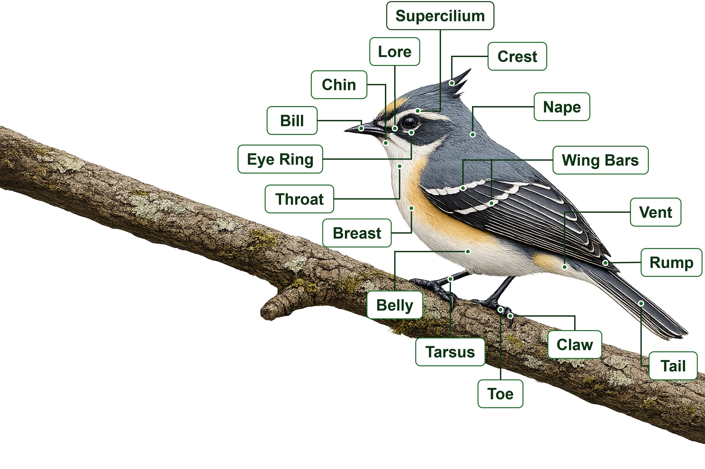

Bird Identification Guide
Discover how birdwatchers identify species by recognising distinctive field marks. Select any labelled feature below to explore its name, purpose and examples from birds found in Assam.

How to Use This Guide
Select any labelled feature on the bird to explore how it helps identify species in the field.
Learn the name of each feature
Understand why it matters for identification
See real examples from birds in Pokkhi
← Click any label on the bird to begin.